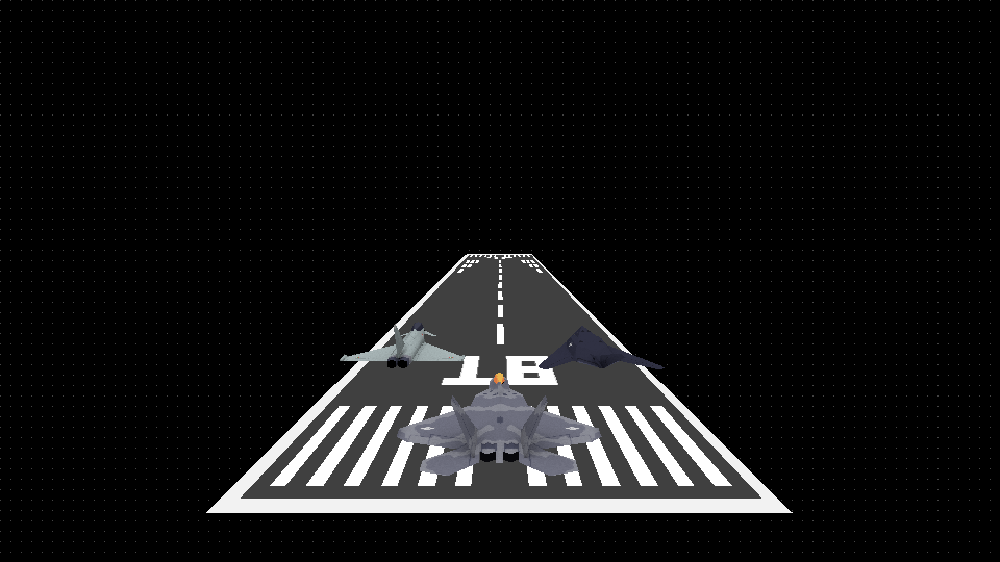

Trung
Nguyen
A Computer Games Technology student with a particular interest in real-time rendering and graphics programming, currently developing a game engine. Working primarily with C++, DirectX 12, and Unreal Engine, I enjoy exploring both the technical and artistic aspects of game development, alongside discovering diverse narrative experiences through games and films.
images/profile.jpg'}))">
Projects

Simple CPU Rasterizer
C • SDL2
- A CPU-based 3D software rasterizer made from scratch in C using SDL2.
- Implements a complete 3D graphics pipeline entirely on the CPU, without relying on GPU rasterization APIs such as OpenGL or DirectX.
- Supports mesh loading, clipping, perspective projection, textured triangle rasterization, z-buffering, back-face culling, camera movement, and multiple rendering modes.
View source code

Simple CPU Ray Tracer
C++ • CMake • SDL2
- A basic ray tracer written in C++ using CMake, built by following the Ray Tracing in One Weekend tutorial series.
- Demonstrates core ray tracing concepts such as lighting, reflections and refractions.
- Includes BVH optimization to speed up ray-scene intersection.
View source code
In Development

DirectX 12 Graphics Engine
C++ • DirectX 12
- A personal project currently in development using the DirectX 12 API and C++.
- The goal is to build a graphics engine that implements modern graphics techniques.
Skills
Languages & APIs
- C++
- DirectX 11/12
- Vulkan
- OpenGL
- C
- Python
- Java
- HTML & CSS
Frameworks & Tools
- Unreal Engine
- Git
- Unity
Other
- Teamwork
- Problem solving
- Game Design
- Storytelling
- Empathy
Education

MSc Computer Games Technology
Abertay University • 2026 – Present
Currently in my first semester, with modules in Graphics Programming, Game AI and Game Networking.

BSc Computer Science
HUST / Troy University • 2022 – 2026
Studied the Computer Science programme at Hanoi University of Science and Technology in partnership with Troy University. Courses like Data Structures and Algorithms, Object-Oriented Programming and Operating Systems gave me the skills and knowledge for game programming, and are particularly helpful for my current focus: computer graphics in video games.
About Me
I'm a student focusing on real-time rendering and graphics programming, experienced with C++, graphics mathematics, CPU rasterization, and CPU ray tracing. I'm interested in understanding the technical, design and narrative aspects of games. I'm building a portfolio around graphics engineering and game system analysis, while constantly thinking of new ideas for the games I want to make.
Open to opportunities and collaborationsNavigation
Contact & Info
-
Email tn66638@gmail.com
-
Education MSc Computer Games Technology, Abertay University
BSc Computer Science, HUST / Troy University -
CV Download CV